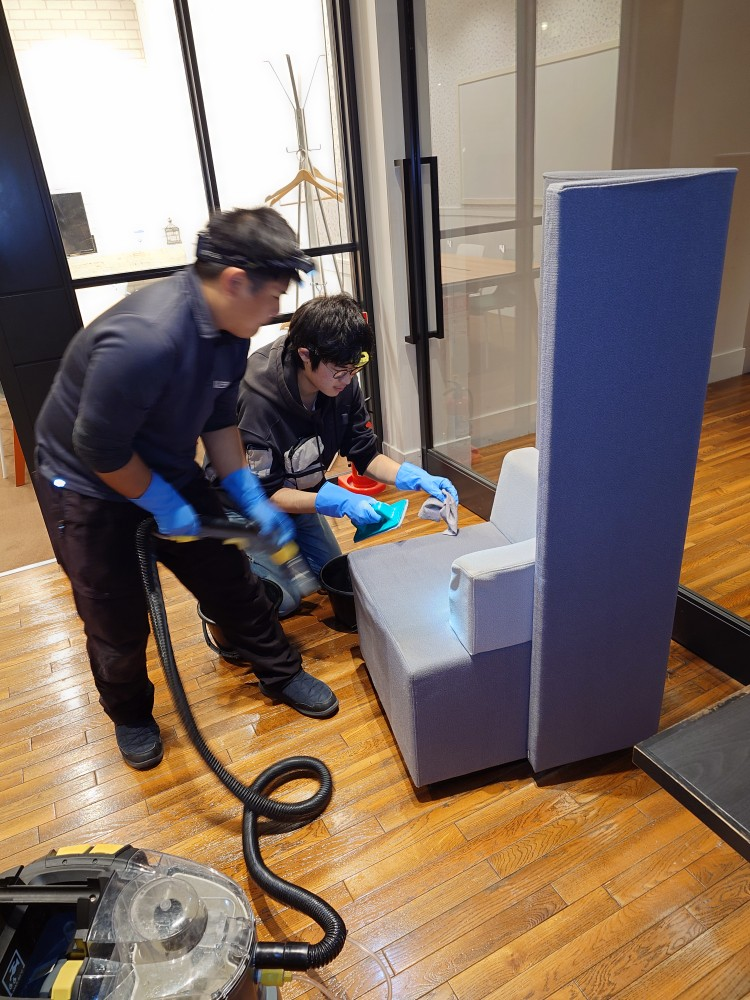
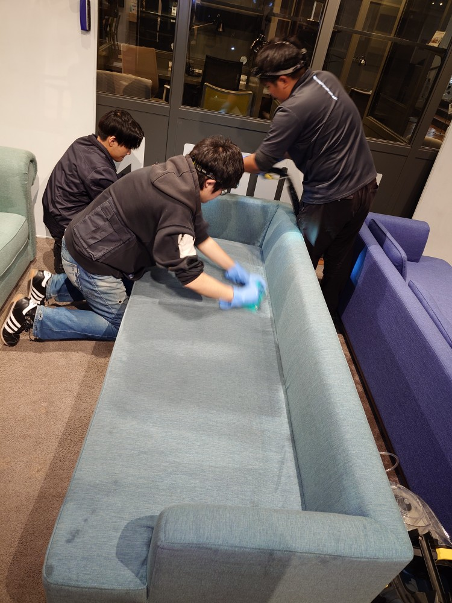
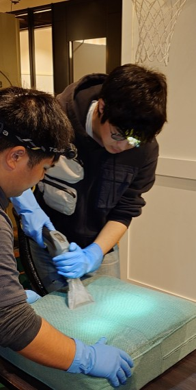
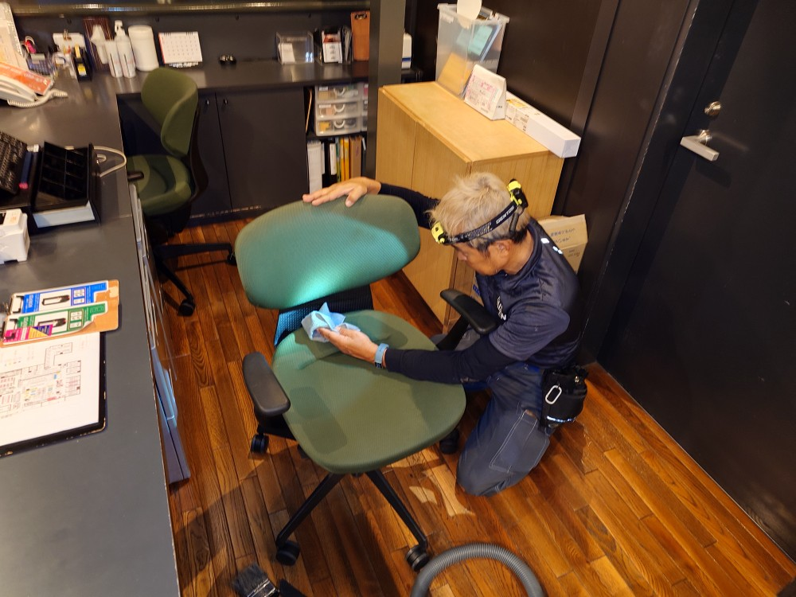
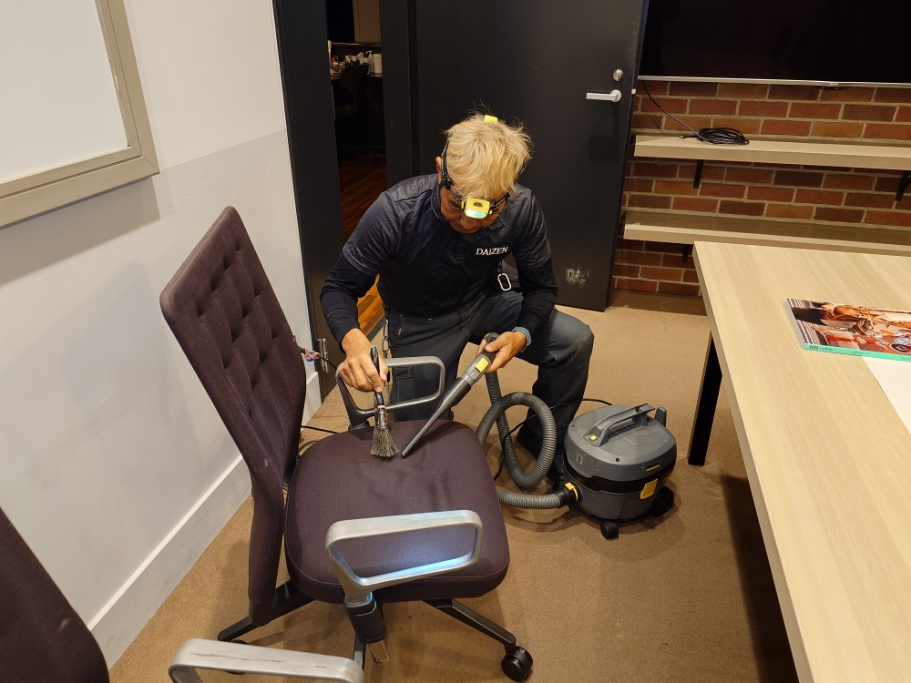
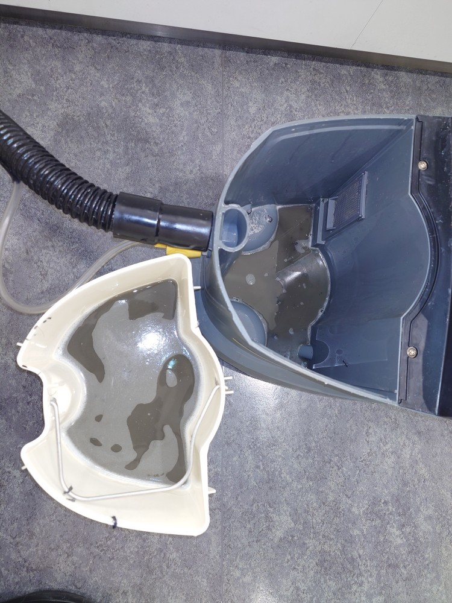

東京都渋谷区ヒカリエM様オフィスのソファ洗浄クリーニング、オフィスチェア洗浄クリーニングをしました！
https://youtube.com/channel/UC7UmhZYe2HlXjsNeloyCQRQ?si=aiIf725VOK4ja8Z4

渋谷区ヒカリエM様オフィスのソファ洗浄クリーニング、オフィスチェア洗浄クリーニングを年末の大掃除クリーニングで一気に実施しました！1年間働いてくれたオフィスの家具、オフィスの什器、ソファ、チェアはしっかり堆積汚れ、ホコリ汚れ、使用感ある汚れが付いておりますので、1年間の感謝を込めて、愛情たっぷりに、一脚ずつ、一面ずつ、お世話になった恩返しで丁寧に慎重に洗浄クリーニングを実施しました！スタッフ全員汗びっしょりになって早朝から夕方まで掛けて、全てのターゲットを洗浄クリーニングしてピカピカにしました！DAIZENプロフェッショナルクリーニングメソッドを用いて、ここ渋谷ヒカリエでもとても良い仕事が出来ました!また新たな新年で、これらオフィスチェア、オフィスソファが活躍してくれる事になります、とても有り難いですね、心より感謝します！



https://youtube.com/channel/UC7UmhZYe2HlXjsNeloyCQRQ?si=dFPGHaBRPV6YL-3J

